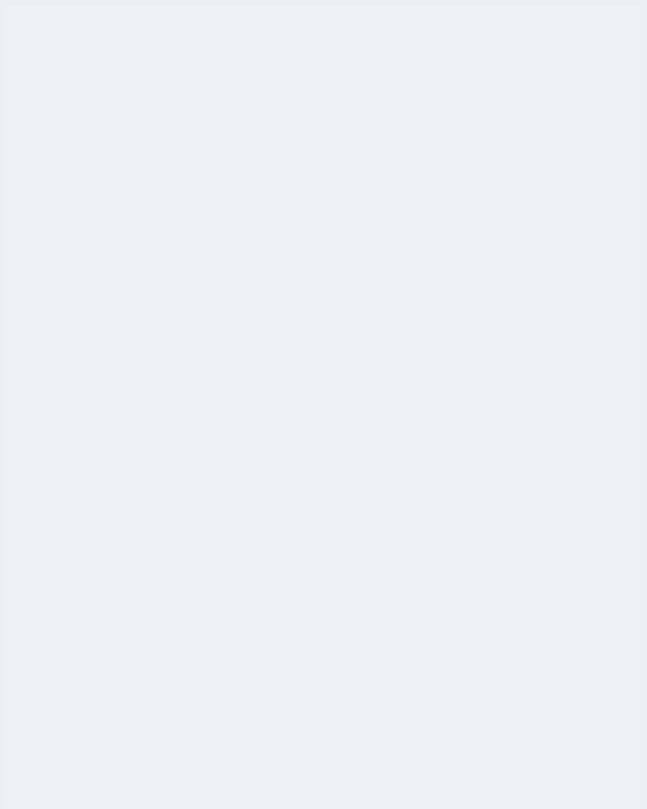

Три карточки: приветствие, выбор жанра и выбор игры — анимация сверху, текст
снизу. Слои для After Effects лежат в layers/<экран>/*.png,
тайминги — в timeline.json, инструкция —
docs/10_ae_animaciya_kartochek.md.
Первое сообщение бота после /start: коротко о том, что он умеет, и кнопка «Старт». Появление сообщения повторяет настоящий Telegram — сначала «печатает…», затем пузырь текста и клавиатура.

Бот предлагает жанры; отметка ✔ появляется сразу после нажатия, а текст сообщения и строка «Выбрано: …» обновляются. В конце — кнопка «Показать подборку».
Подборка игр по анкете: фильтры, номер страницы и игры, в которые пользователь ещё не играл. Нажатие на строку ведёт в карточку игры с обложкой из RAWG.